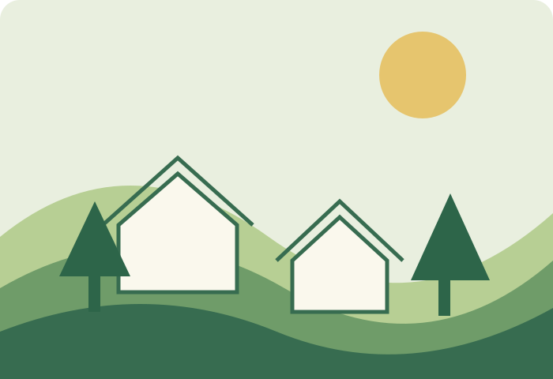

LOCAL ACTION, BIG CHANGE
地域と環境を、未来につなぐ。
GREEN LINKは、地域にある資源や人のつながりを活かし、環境にやさしいまちづくりを応援する仮想企業です。
取り組みを見る →
暮らしのそばから、持続可能な地域をつくる。
日々の買い物、移動、地域での交流。身近な暮らしを見つめ直し、地域の魅力を活かすことが未来への一歩になると考えています。
01 地域資源の発見
自然、農産物、文化、人。地域にある価値を見つけます。
02 環境にやさしい企画
身近な行動から始められる取り組みを設計します。
03 人と人のつながり
住民・団体・事業者が協力できる場をつくります。